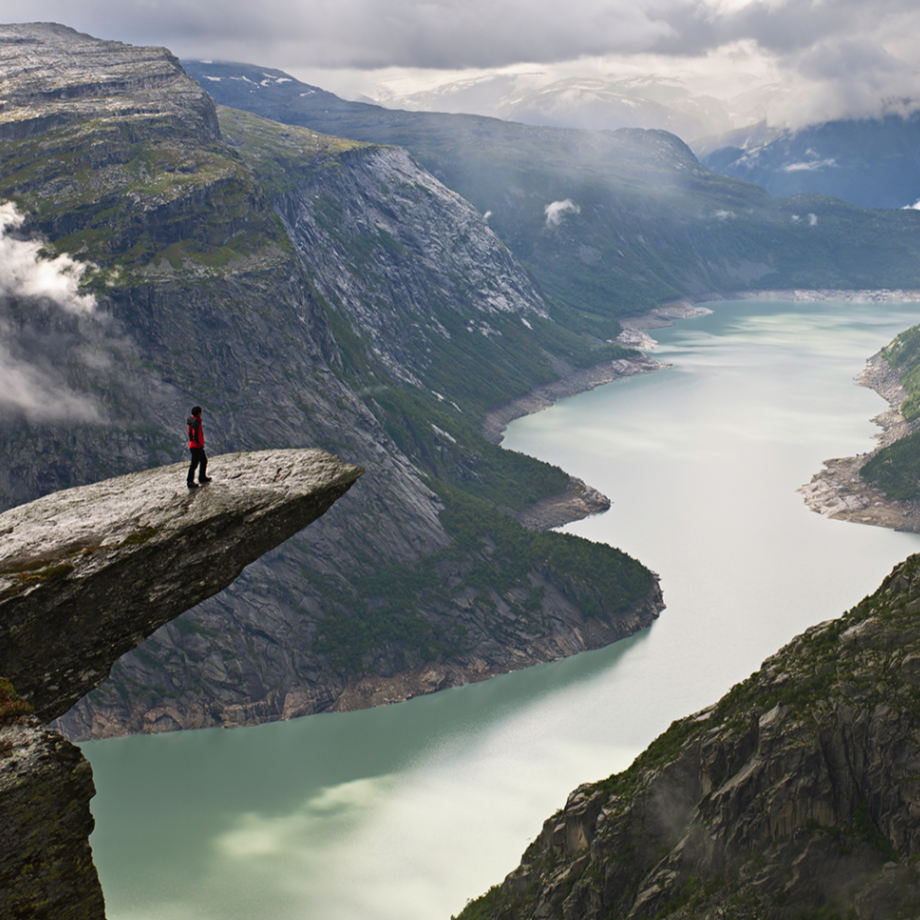
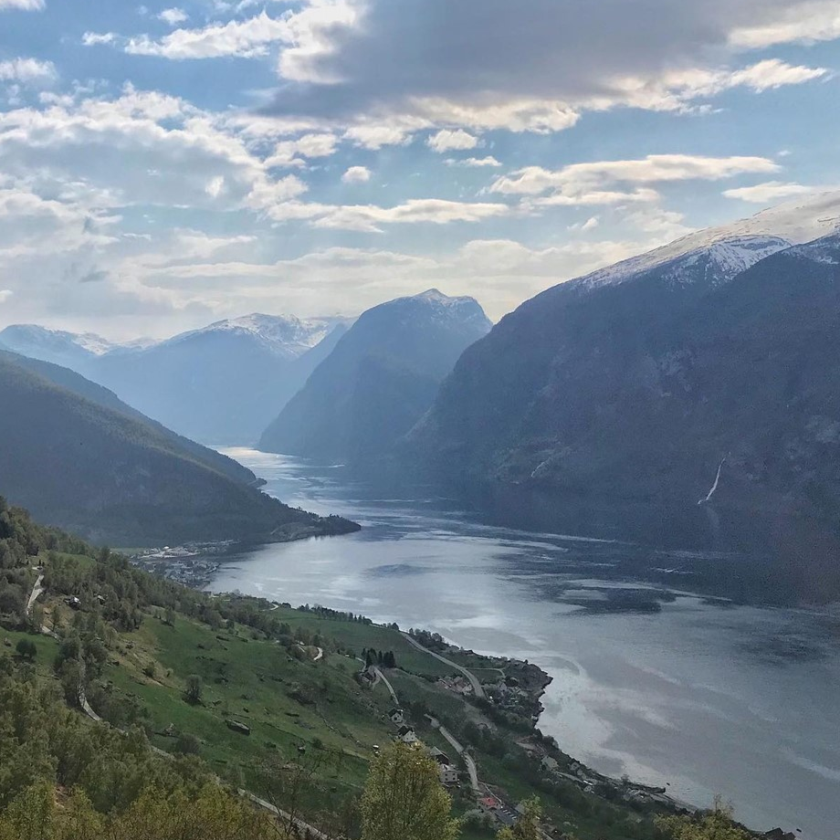
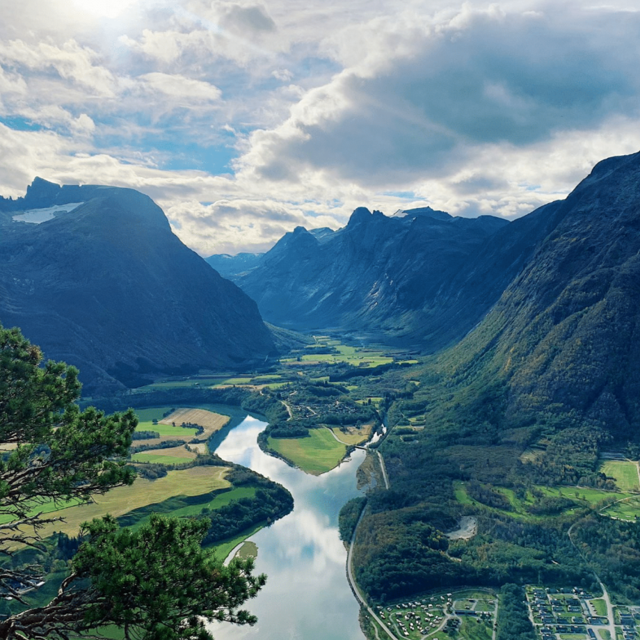

Traveling in Norway
The essence of Norway's appeal is remarkably simple: this is one of the most beautiful countries on earth.
Why visit Norway?
Norway is a destination full of charms, including its famous fjords, Viking legends, thriving cultural heritage and quaint fishing villages. From north to south, it is a nature lover’s paradise that also boasts numerous trendy cities to explore. Whether you’re an adventure seeker or simply want to cuddle under a natural lightshow in a glass igloo, Norway won’t disappoint. While visiting this Scandinavian nation you could stroll through its regal capital city and sail along miles of coastlines. Or drive through meandering mountain roads and hike one or more of its nearly 300 mountain peaks. All of this, and more, awaits you on a holiday to Norway.
- Longest river: Glomma 600 kilometres
- Highest peak: Galdhøpiggen 2,469 metres
- Largest glacier: Jostedalsbreen 487 square kilometres
- Longest fjord: The Sognefjord 204 kilometres
- Most famous waterfall: Vøringsfossen 182 metres
-
Trolltunga
URL
trolltunga.comIs it true that you have always wanted to stand alone on a rock ledge, which hangs between heaven and earth, to look at fjords and glaciers and admire the power of nature? If you climb to Trolltunga in Norway - you can do it!
Trolltunga is one of the most amazing hikes in Norway. Located at an altitude of 1100 meters above sea level, you will see sublime and spectacular views along the entire trail, and not just to the endpoint! You will pass several deep blue fjords, and dramatic mountains that make this demanding hike worth it.
-
Aurlands fjord
URL
aurlandsfjordThe Aurlandsfjord is considered one of the most picturesque and dramatic fjords in the world. The fjord is located in the Fjordane district between Flam and the Beitelen Mountains and flows through the local authorities of Vik, Aurland, and Lærdal and near the villages of Flam, Aurlandsvangen, and Undredal.
This fjord covers 29 km and is part of the Sognefjord, the longest fjord in Norway. Aurlandsfjord is narrow and deep. It reaches an average depth of 962 meters and a maximum width of 2 km. Most of the fjord is surrounded by steep mountains that rise to a maximum height of 1800 meters. This is why most of the fjord is uninhabited except in the few small valleys around it.
-
Lofoten Islands

Lofoten Islands Archipelago While the many fjords cut through Norwegian soil, the Lofoten Archipelago lies in the northern part of the country as a kind of sandbar. Among the many mountains and peaks rising towards the Arctic sky, you will find traditional villages full of local fishermen and artists.
In the Lofoten Islands, you can go hiking, skiing, kayaking, fishing, rafting, diving, and they are considered one of the best places in Norway for surfing. Along with the many sporting activities you can also enjoy the amazing scenery and watch natural phenomena like the Northern Lights and midnight sun, along with other attractions like museums, attending a Viking feast, and more.
-
Åndalsnes
URL
andalsnesAndelsense is much more than just another small western Norwegian town that currently houses about 4,000 people. The town is nestled between fjords and mountains in the heart of the Romsdal Valley and is the administrative center of Rauma County. Because the town is surrounded by mountains that are 1800 meters above sea level, it is affectionately known as "the alpine village near the fjord".
You are expected to views that are considered spectacular of their kind in all of Norway which include the clear Rauma River, lookout points like Rampestreken, lush waterfalls, steep mountains, and magnificent bridges like the famous Kylling Bridge, the bridge over Slettafossen waterfall, and more.
-
Atlantic Road

It is one of the most beautiful scenic roads in the world, which is also an extraordinary architectural creation of a road that winds its way between the sea and the land and passes between wild landscapes.The lucky ones among the hikers on the Atlantic Road will get to see whales and seals in the seawater. Along the road, there are four stopping points for a panoramic view of the landscape, which combines the beauty of nature with the architectural sophistication that characterizes the Atlantic Road. Some people choose to walk here during the autumn season, which is characterized by storms, which make traveling on the road a unique experience, even if dangerous.
Explore Norway!
Land of intense natural beauty